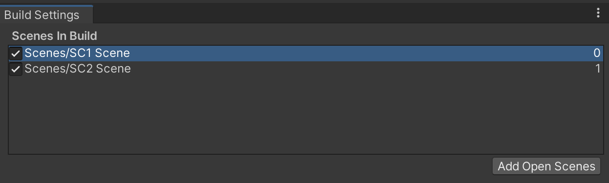

ゲームはタイトル画面、キャラクター選択画面、プレイ画面、ゲームオーバー画面など様々なシーンから出来ています。
スクリプトを使うとこれらのシーンを切り替えることが出来ます。
まず準備です。
テスト用にシーンを 2 つ新規作成し、Script Graph も新たに設定します。
まず1つ目のシーンです。
アセットフォルダの Scenes フォルダの中にシーンを新規作成し、シーン名を「SC1 Scene」にする。背景色は任意で構わない
新規作成したシーンへ移動する
ヒエラルキー右クリック → 3D Object → Sphere で球を新規作成し、名前を「TAMA」、Position を (-5,0,0)にする
Scripts フォルダの中に入り、空いている部分を右クリックしてメニューを表示し、Create → Visual Scripting → Script Graph を選ぶ
Scripts フォルダ内に「New Script Graph」というアセットが出来るので「SC1 Script」に名前を変更する
TAMA に Script Machine コンポーネントをアタッチする
Script Machine の Graph の None と書いてあるセルに SC1 をドロップする
同様に2つ目のシーンを作成します。
アセットフォルダの Scenes フォルダの中にシーンを新規作成し、シーン名を「SC2 Scene」にする。背景色は任意で構わない
新規作成したシーンへ移動する
ヒエラルキー右クリック → 3D Object → Cube で立方体を新規作成し、名前を「HAKO」、Position を (5,0,0)にする
Scripts フォルダの中に入り、空いている部分を右クリックしてメニューを表示し、Create → Visual Scripting → Script Graph を選ぶ
Scripts フォルダ内に「New Script Graph」というアセットが出来るので「SC2 Script」に名前を変更する
HAKO に Script Machine コンポーネントをアタッチする
Script Machine の Graph の None と書いてあるセルに SC2 をドロップする
シーンの切替をする前にシーンをビルド設定に登録する必要があります。
以下の手順で登録をして下さい。
シーンを SC1 Scene に切り替える
File メニュー → Build Setting でビルド設定ダイアログを開く
Add Open Scenes ボタンを押すと現在開いているシーン(SC1 Scene)が Scenes in Build の欄に登録される
SC2 Scene に切り替える
もう一度 Add Open Scenes ボタンを押すと現在開いているシーン(SC2 Scene)が Scenes in Build の欄に登録される
この時点で Scenes in Build の内容が図 1 の様になっているのを確認したら設定ダイアログを閉じる
図1. シーンの登録
ではシーンの切替をしてみましょう。
シーン切替を行うユニットは Scene Manager Load Scene ユニットです。
ユニット内の Scene Name にシーン名を入れます。
まず SC1 Script に 図 2 を入力して下さい。
Jump ボタンを押すと SC2 Scene に切り替わります。
図2. SC1 Script
次に SC2 Script に 図 2 を入力して下さい。
5 秒経過すると自動で SC1 Scene に切り替わります。
Start イベントをコルーチン化するのを忘れないで下さい。
図4. SC2 Script
さて図1、図2を入力したら実行してみてください。
すると切り替えたシーンのゲームオブジェクトが図 4 の様に暗くなっていることに気がつくと思います。
この理由はシーンに光源の設定がされていないためです。
図5. シーンを切り替えるとゲームオブジェクトが暗くなる

この現象を解決するには以下の手順でシーンごとに光源設定をする必要があります。
シーンを SC1 Scene に切り替える
Window メニュー → Rendering → Lighting で光源設定ダイアログを表示する
(もしチェックされてたら) ダイアログの下にある Auto Generate のチェックを外す
ダイアログの下にある Generate Lighting ボタンを押す
するとアセットフォルダの Scenes フォルダの中に SC1 Scene というフォルダが出来て、中に光源設定が保存される
SC2 Scene に切り替える
(もしチェックされてたら) ダイアログの下にある Auto Generate のチェックを外す
Generate Lighting ボタンを押す
するとアセットフォルダの Scenes フォルダの中に SC2 Scene というフォルダが出来て、中に光源設定が保存される
なおこの光源設定は画面上に静的ゲームオブジェクト(static GameObject)を配置したり削除したりしたら毎回手動でおこなう必要があります。
いちいち手動で Generate Lighting ボタンを押すのが面倒な場合は Auto Generate をチェックしすれば自動で設定してくれますが、結構重い処理なので PC の性能がいまいちな場合は OFF にしておいた方が無難でしょう。